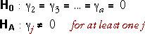
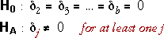

Testing whether the variables are needed
We again assume the following model for the effect of two categorical explanatory variables on the response, y.
In this model, we are usually interested in testing whether the two categorical variables actually are important predictors of the response. This corresponds to the hypotheses,


Since each hypothesis may relate to 2 or more parameters (if that categorical variable has 3 or more levels), analysis of variance is needed for tests.
Designed experiments
Data of this form usually (but not always) arises from a designed experiment in which there are equal numbers of observations (replicates) for all possible combinations of levels of the two factors. This ensures that the categorical variables are orthogonal, so the order of adding terms to the anova table does not affect the sums of squares or p-values. There is then no need for separate anova tables for the two orders of adding the categorical variables.
Strength of asphaltic concrete
The diagram below shows the least squares model for the concrete strength data
From the anova table, we conclude that there is extremely strong evidence that both the compaction method and the aggregate type affect strength.
Penicillin production yield
In the example below, a process for manufacture of penicillin was being investigated. Three variants of the basic process (A, B and C) were being studied and the response measurement was the yield of penicillin.
An important raw material for the process was corn steep liquor, and this was quite variable. Instead of conducting the experiment with only one blend of corn steep liquor, it was therefore decided to use five different blends in order to ensure that the results were not specific to one particular blend. Each of the three process variants was used once with each blend.
From this data set, we conclude that there is no evidence of differences between either the treatments or the blends.
Cholesterol determination
In a hospital laboratory, three technicians are making serum cholesterol determinations in milligrams per centimeter. To test the similarity of these techicians, sera from five normal subjects are split into 1/6 aliquots to be tested twice by each technician.
The three technicians can be treated as one factor (a = 3 levels) and the five subjects are the other factor in the experiment (b = 5) and there are r = 2 replicates since each techician makes two cholesterol determinations from each subject.
From this anova table, we conclude that there is extremely strong evidence of differences between the subjects — as was probably expected — and also extremely strong evidence of differences between the observers.